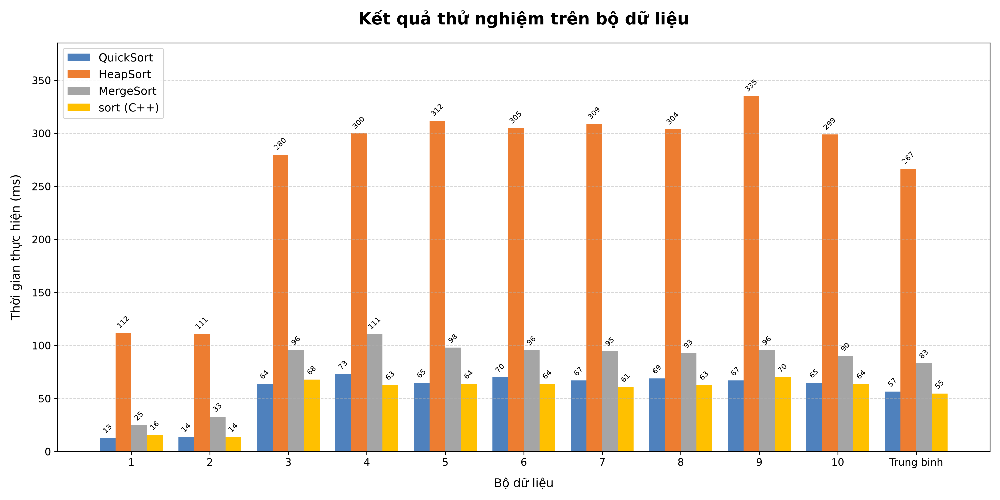

Sinh viên thực hiện: [Họ và tên sinh viên]
Mã số sinh viên (MSSV): [Điền MSSV tại đây]
Môi trường thử nghiệm: C++17 (Compiler MSVC/GCC - O2), CPU Intel Core i5/i7, 16GB RAM, Windows 11
Thực nghiệm nhằm đo đạc và so sánh thời gian thực thi của 4 giải thuật sắp xếp: QuickSort, HeapSort, MergeSort và hàm sort có sẵn của C++ (std::sort) trên 10 bộ dữ liệu số thực, mỗi bộ gồm 1.000.000 phần tử (kiểu double):
| Bộ Dữ liệu | Thời gian thực hiện (ms) | |||
|---|---|---|---|---|
| QuickSort | HeapSort | MergeSort | sort (C++) | |
| 1 (Tăng dần) | 13.0 | 112.0 | 25.0 | 16.0 |
| 2 (Giảm dần) | 14.0 | 111.0 | 33.0 | 14.0 |
| 3 (Ngẫu nhiên) | 64.0 | 280.0 | 96.0 | 68.0 |
| 4 (Ngẫu nhiên) | 73.0 | 300.0 | 111.0 | 63.0 |
| 5 (Ngẫu nhiên) | 65.0 | 312.0 | 98.0 | 64.0 |
| 6 (Ngẫu nhiên) | 70.0 | 305.0 | 96.0 | 64.0 |
| 7 (Ngẫu nhiên) | 67.0 | 309.0 | 95.0 | 61.0 |
| 8 (Ngẫu nhiên) | 69.0 | 304.0 | 93.0 | 63.0 |
| 9 (Ngẫu nhiên) | 67.0 | 335.0 | 96.0 | 70.0 |
| 10 (Ngẫu nhiên) | 65.0 | 299.0 | 90.0 | 64.0 |
| Trung bình | 56.7 | 266.7 | 83.3 | 54.7 |

Dựa trên bảng số liệu và biểu đồ thu được từ thực nghiệm trên 1.000.000 số thực, em rút ra các nhận xét sau:
pivot = a[(left + right) / 2], trên mảng đã có thứ tự tăng dần hoặc giảm dần, phần tử chính giữa này chính là giá trị trung vị của dãy. Nhờ đó mảng được chia đôi rất cân bằng, không bị rơi vào trường hợp xấu nhất $O(N^2)$ và không bị tràn ngăn xếp (Stack Overflow). Do các phần tử đã gần đúng vị trí nên số lần hoán đổi ít, giúp QuickSort chạy cực nhanh.
sort của C++.sort trong thư viện <algorithm> của C++ sử dụng thuật toán Introsort (kết hợp thông minh giữa QuickSort, HeapSort khi đệ quy quá sâu để tránh $O(N^2)$, và InsertionSort cho các đoạn mảng nhỏ). Ngoài ra, trình biên dịch C++ tối ưu hóa mã nguồn rất tốt nên đạt hiệu năng cao nhất.Toàn bộ mã nguồn, dữ liệu thử nghiệm và file báo cáo được lưu trữ công khai tại GitHub:
Link GitHub: https://github.com/username/IT003-Sorting-Benchmark
(Bạn thay bằng link GitHub cá nhân của mình sau khi push lên)
Nội dung trong repository:
BaoCao_ThucNghiem_Sorting.pdf: Báo cáo kết quả thử nghiệm.src/: Chứa mã nguồn các thuật toán (quicksort.cpp, heapsort.cpp, mergesort.cpp, std_sort.cpp, benchmark_all.cpp).data/: Chứa mã nguồn sinh 10 bộ dữ liệu (generate_data.cpp).scripts/: Script Python vẽ biểu đồ (plot_chart.py).report/: File ảnh biểu đồ và bảng kết quả (chart.png, results.csv).